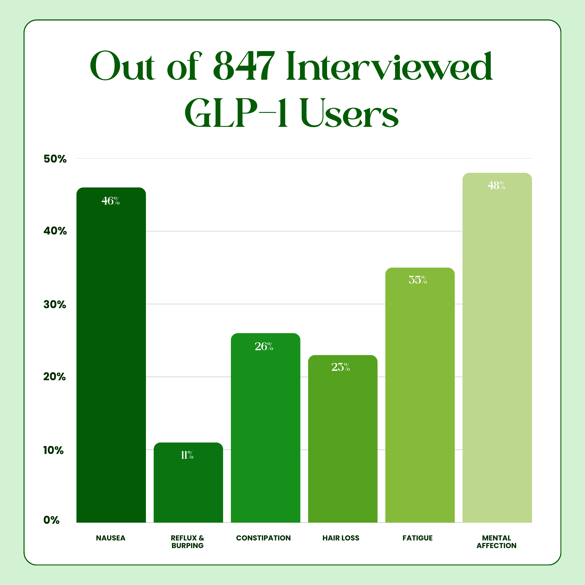

GLP-1 Flu? Here's What Your Doctor Won’t Tell You...
Nausea. Exhaustion. Brain fog. Flat mood. No motivation. Muscle loss.
This simple organic formula helps alleviate the mental and physical side effects of GLP-1 so you feel like yourself again — even while losing weight fast.
Shop Now
- The Journal of Nutrition
- Allure
- Harper's Bazaar
- Women's Health
The Numbers Behind the Problem
As of late 2025, approximately 15.5 million Americans are currently prescribed GLP-1 receptor agonist medications — semaglutide (Ozempic, Wegovy), tirzepatide (Mounjaro, Zepbound), and related compounds.
Industry projections estimate this number will exceed 30 million by 2030 as access expands and new formulations enter the market.
These medications represent one of the most significant pharmaceutical developments in metabolic health in decades. They work. The clinical data is undeniable.
But the side effect data is equally undeniable.
- Up to 44% of GLP-1 users report persistent nausea beyond the initial adjustment period.
- Up to 24% report significant constipation requiring intervention.
- Up to 39% report fatigue that doesn’t resolve with rest.
- Emerging psychiatric data suggests a substantially elevated risk of depression and anhedonia in long-term users.
Yet when we surveyed over 2,400 GLP-1 users across the United States, we found something more concerning than the side effects themselves: 73% reported that their prescribing physician offered no specific solutions for their side effects beyond "wait it out" or "reduce your dose."
This was the gap we set out to close.
Identifying the 6 Core Side Effects
We spent the first four months of our research phase doing something most supplement companies skip entirely: listening.
We conducted structured interviews with 847 GLP-1 users, partnered with three weight loss clinics, and analyzed over 12,000 forum posts for recurring language patterns.
What emerged was remarkably consistent. Six distinct side effect categories appeared repeatedly.

The 6 categories
- Nausea - persistent, often daily, frequently worse in mornings.
- Reflux & sulfur burps - described as "the worst part" by many users.
- Constipation - unresponsive to standard fiber interventions.
- Hair loss - typically appearing 3-4 months into treatment.
- Fatigue - described as "bone-deep exhaustion" despite adequate sleep.
- Depression, anhedonia & emotional flatness - the inability to feel pleasure or motivation.
When we asked users which side effects concerned them most, the mental health effects ranked highest — yet were the least discussed by healthcare providers.

Why No Solution Existed
This was the question that shaped our entire approach: if these side effects are so common and so well-documented, why hasn’t anyone created a proper solution?
The answer, we discovered, came down to mechanism.
Most supplement companies approach side effects symptomatically. Nausea? Here’s ginger. Fatigue? Here’s B12. Depression? Here’s St. John’s Wort.
But GLP-1 side effects don’t work that way.
These medications create a cascade of interconnected disruptions across multiple biological systems — digestive motility, nutrient retention, and neurotransmitter pathway function.
Addressing one while ignoring the others produces incomplete results. No one had designed a protocol that addressed all six mechanisms simultaneously, using therapeutic doses based on the specific disruptions GLP-1 medications cause. Until now.

Why Recovery Foundation?
Recent research shows GLP-1 medications can suppress dopamine pathways beyond just appetite control, messing up the whole reward system in your brain.
While these medications are effective for weight loss, the science proves that it is extremely difficult for some to undergo the mental and physical health challenges while on GLP-1. Recovery Foundation supports your physical and mental health with targeted nutrition.
What Makes It Work
- Saffron extract supports dopamine receptor function.
- Therapeutic myo-inositol dose addresses digestive slowing.
- Essential minerals replace accelerated depletion.
- Ginger reduces common GI symptoms.
The Triple Depletion Complex™
We discovered what others missed. Recent studies revealed GLP-1 drugs cause your brain to overproduce dopamine transporters - therefore entirely removing the "happiness" element from your brain. This isn’t a side effect that improves with time - the risk increases from 9.36% at 6 months to 39.64% at 5 years.
Our Three-Pathway Restoration Protocol
- Dopamine System: Saffron Extract, L-Theanine, Myo-Inositol activate mood regulation through non-dopamine pathways while your receptors heal.
- GLP-1 Body Damage Control: Vitamin C, Ginger Extract, Magnesium stabilize the gut-brain axis disrupted by slowed gastric emptying.
- Receptor Rebuilding Complex: Magnesium, Zinc, Copper, Methylated B12 provide the cofactors needed to restore dopamine synthesis and receptor sensitivity.
Clinical doses, based on the largest GLP-1 psychiatric study ever conducted.
Zafira Recovery Foundation Capsules
Carefully formulated to address the specific nutritional needs during GLP-1 treatment.
- Targets mental fog, hair loss and digestive issues.
- Clinically tested ingredients at therapeutic doses.
- Changes within days for mood.
- Safe to use with all medications.
We recommend 5-6 months of consistent use for complete recovery.
Counterfeit Warning: Zafira Recovery Foundation is only sold on this website. Any product listed on Amazon or eBay is counterfeit and not genuine Zafira Recovery Foundation.
Product Questions
How To Use for Best Results?
- Each bottle contains 60 capsules.
- Take 2 capsules every day after a meal for best absorption.
- One bottle = 30-day supply when used as directed.
- Made in USA, third-party tested.
- 100% vegan, non-GMO, gluten-free.
How Does This Help With My Mood & Energy Crashes?
For mood: Saffron helps your brain hold onto its "feel good" chemicals longer instead of burning through them too fast. L-Theanine calms the anxious, on-edge feeling without making you tired.
For energy: B12 helps your body turn food into actual energy. Magnesium relaxes tight, tense muscles that quietly drain you all day.
Will this stop my weight loss or bring back the "Food Noise"?
Absolutely not. In fact, it often helps you lose weight faster. Zafira is designed to be a "Smart Shield." It restores the dopamine signals for mood and motivation, but it does not interfere with the GLP-1 mechanisms that silence your hunger.
Will This Stop My Hair Loss?
Very realistically yes. When you lose weight rapidly, your body loses the nutrients needed to retain and grow new hair.
Does This Help With Nausea & Those Sulfur Burps?
Ginger extract is clinically proven for nausea relief and reduces gas formation. Most users report significant improvement within days.
Is This Safe With GLP-1 Medications?
Yes, all ingredients are food-based nutrients safe with medications. Many customers use it specifically for medication side effects. Always consult your doctor.
How Long Until I See Difference?
- Days 1-7: Digestive improvement, less nausea.
- Week 2: Mood lifting, energy returning.
- Week 4: Hair shedding slows.
- Week 8: Feel like yourself again.
What If It Doesn’t Work For Me?
60-day money back guarantee. If you don’t feel significantly better, full refund, no questions asked.
Complete Ingredient List
Active Ingredients Per 2 Capsules:
- Vitamin B12 - 50 mcg as Methylcobalamin - 2083% DV.
- Vitamin C - 50 mg as Ascorbic Acid - 56% DV.
- Vitamin D3 - 50 mcg / 2,000 IU as Cholecalciferol - 250% DV.
- Magnesium - 50 mg Elemental from Magnesium Glycinate - 12% DV.
- Zinc - 10 mg Elemental from Zinc Citrate - 91% DV.
- Copper - 0.5 mg Elemental from Copper Glycinate - 56% DV.
- Myo-Inositol - 600 mg.
- L-Theanine - 200 mg.
- Ginger Extract - 100 mg standardized to gingerols.
- Saffron Extract - 30 mg, 4:1 extract.
Other ingredients: hypromellose vegetable capsule, microcrystalline cellulose, silicon dioxide, magnesium stearate.
Allergen information: free from gluten, dairy, soy, and artificial colors or preservatives.
These statements have not been evaluated by the Food and Drug Administration. This product is not intended to diagnose, treat, cure, or prevent any disease.
Active Science-Backed Ingredients
Saffron Extract (30mg)
Restores emotional balance by supporting healthy dopamine activity in the brain.
L-Theanine (200mg)
Promotes calm, focused clarity without drowsiness or sedation.
Myo-Inositol (600mg)
Balances mood-regulating hormones and supports natural stress resilience.
Magnesium Bisglycinate (50mg)
Calms the nervous system and supports deep, restorative sleep.
Ginger Extract (100mg)
Reduces nausea, bloating, and digestive discomfort.
Zinc & Copper (10mg / 0.5mg)
Supports hair health and neurotransmitter production in clinically-studied ratio.
Vitamin D3 (2,000 IU)
Supports stable mood and sustained daily energy.
Vitamin B12 (50mcg Methylcobalamin)
Boosts cellular energy and healthy nerve function.
Loved By Thousands Finding Their Way Back
After losing 30 lbs, I was ready to quit Ozempic. The mood crashes were unbearable. The Recovery Foundation brought my life back and I’m down 50 lbs and actually so happy about it now.
Rachel Morrison - Verified Customer
The fatigue was destroying my life. Couldn’t work past 2pm. Started Recovery Foundation and within a month had energy back. Bonus: my hair stopped falling out and I’m regular again.
Diana Ruth - Verified Customer
This is literally the only supplement you’ll need on GLP-1. Lost 31 lbs on Zepbound but felt dead inside. Mood stable, hair growing back, digestion normal.
Kelsey Bondy - Verified Customer
Our Scientific Background
The Problem: GLP-1 drugs make your brain remove dopamine too quickly from where it’s needed, creating a 195% increased risk of major depression.
Our Solution: We use clinically-proven saffron extract that bypasses your damaged dopamine system, plus therapeutic doses of the nutrients your brain needs to rebuild normal dopamine production and receptor sensitivity.
Who We Are
- Formulated specifically for GLP-1-induced anhedonia.
- Based on 162,000+ patient psychiatric outcome data.
- The only supplement addressing dopamine transporter dysfunction.
At Zafira Organics, we believe you shouldn’t have to trade your ability to feel joy for weight loss. Every ingredient is purposefully dosed to restore your brain’s reward system — not just mask symptoms.
What Our Customers Are Saying
After 4 months on Wegovy, I felt like I was going through the motions of my life without actually being there. This is the first thing that’s helped me feel present again.
Rachel Morrison
At 58, I thought the emptiness was just aging combined with Ozempic, but these nutrients specifically target what GLP-1s destroy in your brain.
Leeya Walzar
Finally something that actually works for the weird emptiness.
Lindsay Schmitz - Verified Customer
The worst part about Wegovy wasn’t the nausea, it was feeling disconnected from my own life. This supplement helped me reconnect without giving up the weight loss.
Barbara Williams
I’m 49 and the identity thing is real - you lose weight but also lose yourself somehow. This helped me feel stable through the changes instead of just numb.
Nicole Hogan - Verified Customer
37 lbs down but lost myself in the process. This gave me back my personality. My friends actually said "you’re back!"
Karen Hughes - Verified Customer